La collezione e' una griglia piena, senza buchi e senza rarita': per ogni classe esiste esattamente una carta di ogni valore. Quello che cambia fra una carta da 2 e una da 10 e' la Potenza di base; quello che cambia fra due carte dello stesso valore e' la classe, quindi l'abilita e la fazione.
Le carte non si collezionano e non si possiedono: non ci sono bustine da aprire, niente da scambiare e nessuna carta in vendita, ne' qui ne' altrove. Tutte e 81 sono sul tavolo dal primo giorno, uguali per tutti. Quello che cambia da una partita all'altra e' il mazzo, che si rifa da zero a ogni run: come funziona sta in Come si gioca. Le cose che si sbloccano e restano sono altre — le classi e le loro supreme — e si prendono al Santuario.
La creatura dice il valore
Il disegno non e' decorativo: ogni valore corrisponde a una creatura precisa, la stessa in tutte e nove le classi. Riconoscere la creatura significa sapere il numero senza leggerlo, ed e' il modo in cui si legge il campo quando le pedine sono sei e il turno e' tuo.
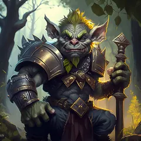
2-goblin-warrior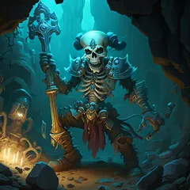
3-skeleton-warrior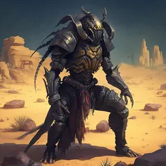
4-animal-warrior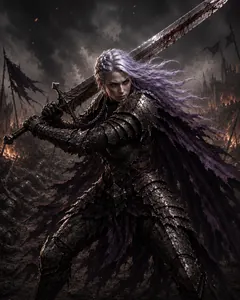
5-darkelf-warrior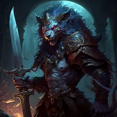
6-chimera-warrior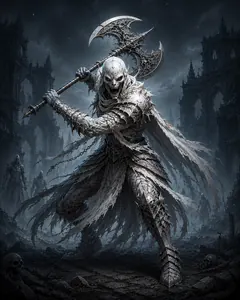
7-whitealien-warrior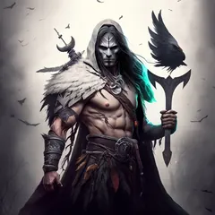
8-spirit-warrior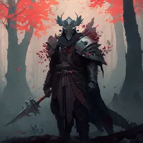
9-faceless-warrior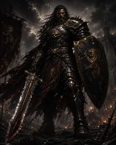
10-champion-warriorLe nove creature qui sopra sono le carte del Warrior, prese come riferimento. La stessa scala vale identica per le altre otto classi: cambia lo stile dell'illustrazione, non la creatura. L'unica eccezione della collezione e' l'Alieno del Necromancer, che al valore 7 porta un nome diverso dagli altri otto.
Le carte, classe per classe
Sotto ogni classe c'e' la sua fila completa dal 2 al 10, e una riga su quanto pesa il valore per quella classe: non e' la stessa risposta per tutte e nove. Serve a due decisioni concrete — chi mettere come campione e vice, e cosa comprare dal mercante quando l'oro basta per una carta sola.
Might
 Warrior Might
Warrior Might
Le sue carte basse valgono piu' di quanto dice il numero. L'aura da tre Warrior regala +2 quando la Potenza del Warrior e' inferiore a quella dell'avversario: e' l'unica aura del gioco che paga per essere la carta piu' debole del confronto. Un 4 dentro un monoclasse Warrior arriva quasi sempre con quel +2 addosso, mentre un 10 lo vede raramente.
2-goblin-warrior3-skeleton-warrior4-animal-warrior5-darkelf-warrior6-chimera-warrior7-whitealien-warrior8-spirit-warrior9-faceless-warrior10-champion-warrior Barbarian Might
Barbarian Might
La classe in cui il valore conta meno di tutte. La Furia si accumula sugli scambi persi e non ha tetto, quindi un Barbarian da 3 che resta in piedi due turni diventa piu' grosso di un 8 qualsiasi. Sono le carte da 12 oro piu' redditizie del mercante: un Barbarian basso capitato a caso non e' un ripiego.
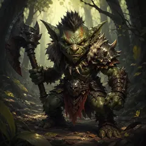
2-goblin-barbarian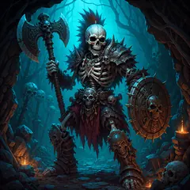
3-skeleton-barbarian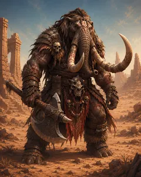
4-animal-barbarian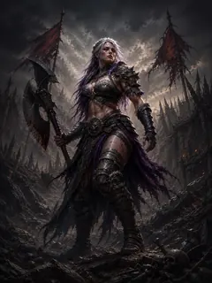
5-darkelf-barbarian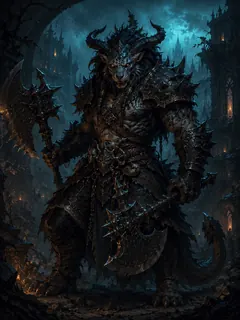
6-chimera-barbarian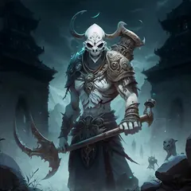
7-whitealien-barbarian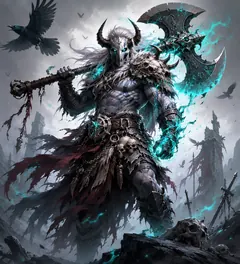
8-spirit-barbarian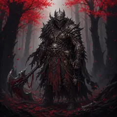
9-faceless-barbarian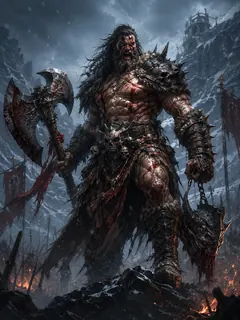
10-champion-barbarian Paladin Might
Paladin Might
Qui invece il valore conta, e molto. Il Paladin fa il suo mestiere solo se sopravvive alla parata: uno che cade mentre protegge un alleato non ha protetto nessuno, e con l'aura non contrattacca. Un Paladin alto non si ordina: o e' lui il campione o il vice, o lo si compra dal mercante.
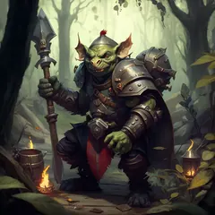
2-goblin-paladin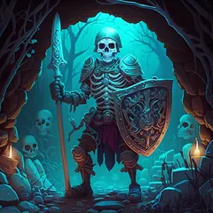
3-skeleton-paladin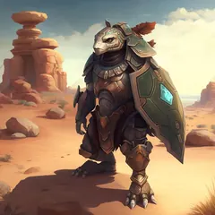
4-animal-paladin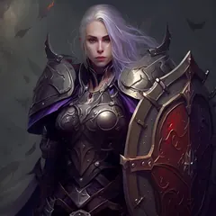
5-darkelf-paladin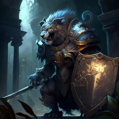
6-chimera-paladin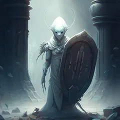
7-whitealien-paladin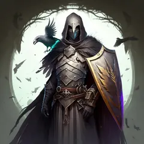
8-spirit-paladin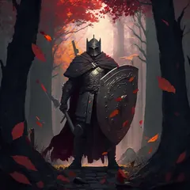
9-faceless-paladin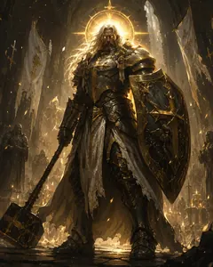
10-champion-paladinCunning
 Rogue Cunning
Rogue Cunning
Indifferente al valore, per costruzione. La soglia del rilancio dipende dal dado Vigore e non dalla carta — 1 su D4, 6 su D20 — quindi un Rogue da 2 ha esattamente la stessa rete di sicurezza di un 10. Con il Barbarian e' la classe che regge meglio un mazzo uscito male.
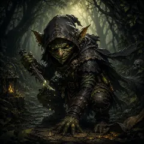
2-goblin-rogue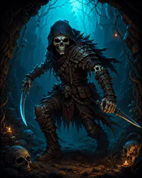
3-skeleton-rogue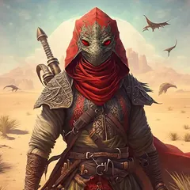
4-animal-rogue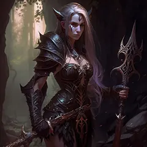
5-darkelf-rogue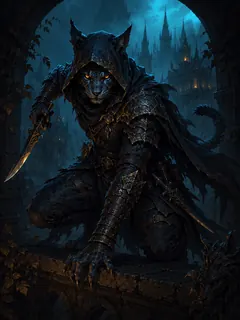
6-chimera-rogue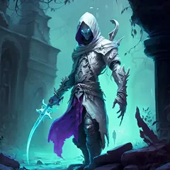
7-whitealien-rogue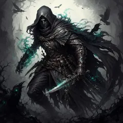
8-spirit-rogue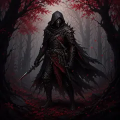
9-faceless-rogue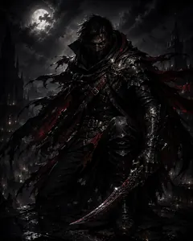
10-champion-rogue Assassin Cunning
Assassin Cunning
Non combatte col numero: toglie un turno. Un'inibizione vale lo stesso che arrivi da un 3 o da un 9, e servono solo 3 mana. Il valore serve a una cosa sola, restare in campo abbastanza per rifarla ogni turno: un Assassin medio che sopravvive rende piu' di un Assassin alto che si prende il primo attacco.
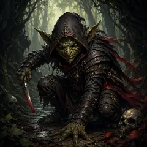
2-goblin-assassin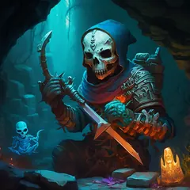
3-skeleton-assassin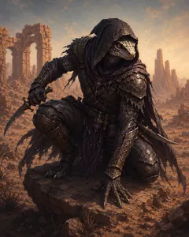
4-animal-assassin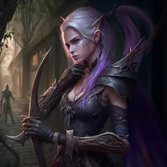
5-darkelf-assassin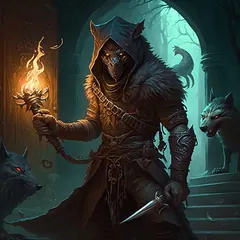
6-chimera-assassin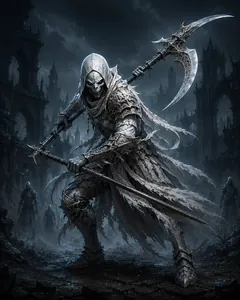
7-whitealien-assassin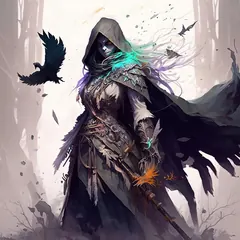
8-spirit-assassin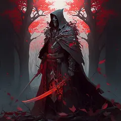
9-faceless-assassin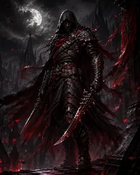
10-champion-assassin Hunter Cunning
Hunter Cunning
Il bonus lo regala a qualcun altro. Il marchio da' +2 (+4 con l'aura) a chi attacca dopo, quindi la Potenza dell'Hunter e' la parte meno importante di quello che porta. Un 2 di Hunter e' uno degli acquisti migliori del mercante: costa la fascia piu' bassa e fa lo stesso lavoro del campione.
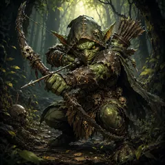
2-goblin-hunter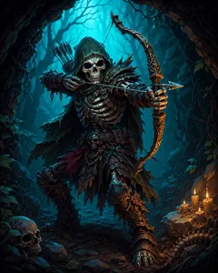
3-skeleton-hunter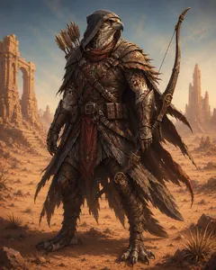
4-animal-hunter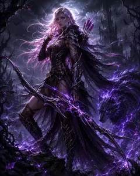
5-darkelf-hunter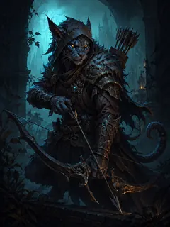
6-chimera-hunter7-whitealien-hunter8-spirit-hunter9-faceless-hunter10-champion-hunterMagic
 Mage Magic
Mage Magic
Abbassa il dado, e questo non dipende dal suo numero. Ogni marchio e' uno scalino in giu' per il nemico, e si accumulano fino al D2. L'aura da tre Mage scatta morendo, quindi un Mage economico che cade facendo -2 permanente a chi lo ha ucciso ha fatto il suo lavoro per intero.
2-goblin-mage3-skeleton-mage4-animal-mage5-darkelf-mage6-chimera-mage7-whitealien-mage8-spirit-mage9-faceless-mage10-champion-mage Necromancer Magic
Necromancer Magic
Vuole essere alto, per due motivi. Costa 4 mana, la seconda abilita' piu' cara, quindi deve restare in campo per giustificarli; e quello che riporta indietro e' una carta che avevi gia' perso, cioe' un vantaggio che matura tardi. Un Necromancer basso muore prima di rialzare qualcuno.
2-goblin-necromancer3-skeleton-necromancer4-animal-necromancer5-darkelf-necromancer6-chimera-necromancer7-alien-necromancer8-spirit-necromancer9-faceless-necromancer10-champion-necromancer Priest Magic
Priest Magic
Come il Paladin: un supporto deve sopravvivere. La benedizione toglie tutti i malus a un alleato e gli da' +2 (+3 con l'aura), e le benedizioni si sommano — ma solo se il Priest e' ancora li' il turno dopo. Come il Paladin, e' una classe che rende molto piu' da campione o da vice che dalle sette carte capitate.
2-goblin-priest3-skeleton-priest4-animal-priest5-darkelf-priest6-chimera-priest7-whitealien-priest8-spirit-priest9-faceless-priest10-champion-priestCome si legge una carta in partita
Il valore e' la base della Potenza, ma non e' il totale: sopra ci vanno il tiro del Vigore, i bonus dell'abilita e quelli dell'aura. Per questo una carta da 4 dentro uno schieramento coerente batte regolarmente una da 8 lasciata da sola — il conto lo trovi in Come si gioca, e i casi in cui conviene davvero in Strategia.
La scritta piccola sotto ogni illustrazione — 7-whitealien-priest e le altre —
non e' niente da imparare a memoria: e' l'identificativo interno dell'asset, e serve solo se
stai confrontando questa pagina con la Biblioteca dentro il rifugio.